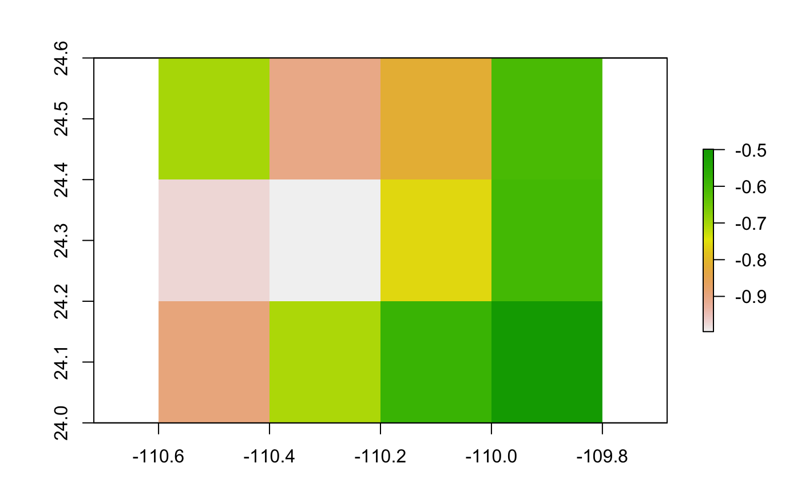

R/exdet_univar.R
exdet_univar.Rdexdet_univa calculates NT1 metric.
exdet_univar(M_stack, G_stack, G_mold = NULL)
| M_stack | a RasterStack or a Matrix of variables representing the calibration area (M area in ENM context). If M_stack is matrix it should contain the values of environmental variables as get it from |
|---|---|
| G_stack | a RasterStack or a Matrix of variables representing areas or scenarios to which models will be transferred. If G_stack is matrix it should contain the values of environmental variables as get it from |
| G_mold | a Raster representing the extent of the projection area. This is only necessary when G_stack is of class matrix; G_mold will we use as a mold to save the NT1 values computed by exdet_univa function. |
The exdet univariate (exdet_univar) and multivariate (exdet_multvar) is calculated following:
Mesgaran, M.B., Cousens, R.D. & Webber, B.L. (2014) Here be dragons: a tool for quantifying novelty due to covariate range and correlation change when projecting species distribution models. Diversity & Distributions, 20: 1147–1159, DOI: 10.1111/ddi.12209.
m_stack <- raster::stack(list.files(system.file("extdata", package = "ntbox"), pattern = "M_layers.tif$", full.names = TRUE)) g_stack <- raster::stack(list.files(system.file("extdata", package = "ntbox"), pattern = "G_layers.tif$", full.names = TRUE)) NT1 <- exdet_univar(M_stack = m_stack, G_stack = g_stack,G_mold=NULL) raster::plot(NT1)